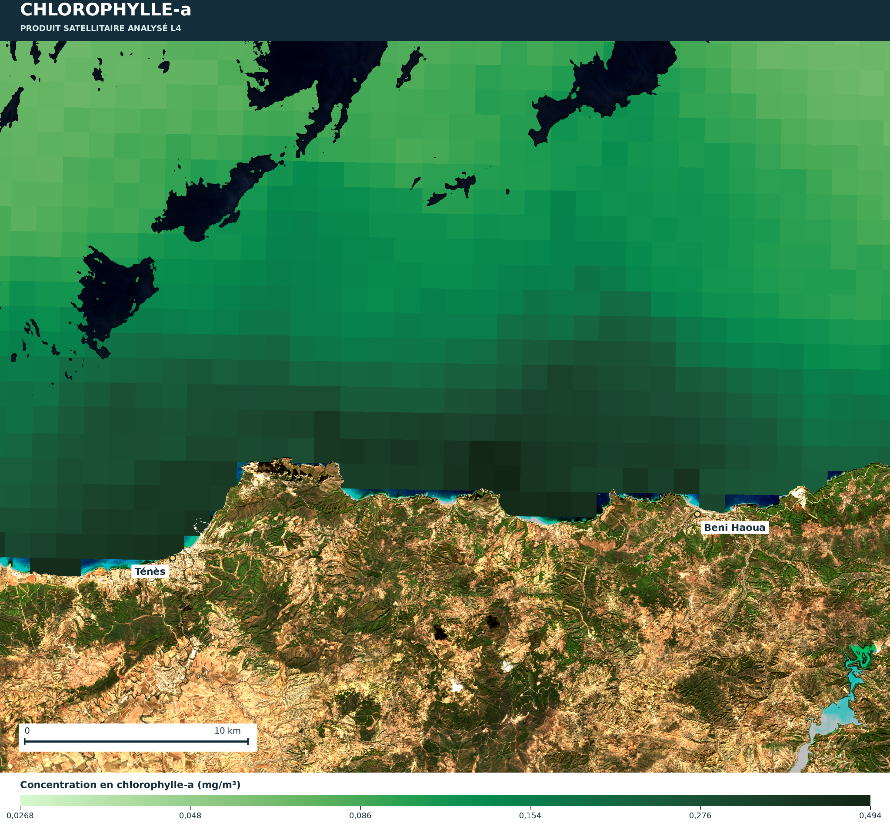

Plateforme d’aide à la décision
Chlorophylle-a
Fiche de paramètre — source, unité, échelle et couche cartographique
Prototype académique · données à valider
🌿
Chlorophylle-a
Indicateur optique lié au phytoplancton. Les eaux côtières et la turbidité peuvent perturber les estimations.
Unité
mg/m³Type de source
Couleur de l’océanStatut actuel : la carte thématique n’est pas encore intégrée. Aucun résultat spatial ni valeur au clic ne sera inventé.
Carte thématique interactive
Points disponibles dans le fichier de données intégré. Cliquez sur un point pour voir sa valeur, sa date et sa source. Les points représentent les données disponibles et non une interpolation continue.
Chargement des données…
| Date/période | Latitude | Longitude | Valeur (mg/m³) | Source / qualité |
|---|
Échelle d’interprétation
Repères de travail — validation documentaire obligatoire
Faible
à interpréter selon saison, zone et produitIntermédiaire
à interpréter selon saison, zone et produitÉlevée
peut signaler une forte biomasse, mais n’est pas automatiquement défavorable
à interpréter selon saison, zone et produitIntermédiaire
à interpréter selon saison, zone et produitÉlevée
peut signaler une forte biomasse, mais n’est pas automatiquement défavorable
Bas / limite inférieure selon variableÉchelle qualitative provisoireHaut / limite supérieure selon variable
À valider avant la version finale : Pas de seuil universel de sélection aquacole pour la chlorophylle-a. Le seuil doit être justifié par le document méthodologique ou la littérature retenue. Cette échelle ne doit pas être présentée comme une classification définitive tant que les seuils exacts du tableau méthodologique ne sont pas transcrits et sourcés.
Fiche de traçabilité
À remplir lors de l’ajout du produit
| Variable | Chlorophylle-a |
|---|---|
| Unité | mg/m³ |
| Source / produit | À renseigner depuis la fiche officielle du produit |
| Période et date | À lire dans les métadonnées du fichier téléchargé |
| Résolution spatiale | À confirmer depuis les métadonnées |
| Contrôle qualité | À documenter avant interprétation |
Carte scientifique de référence — Chlorophylle-a
Ténès — Béni Haoua, Algérie · Image fournie comme référence cartographique · 15 octobre 2026.

Chlorophylle-a · mg/m³. Cette image est datée du 15 octobre 2026 ; elle est distincte des tableaux CSV de juin 2026 et ne doit pas être interprétée comme une carte de juin.